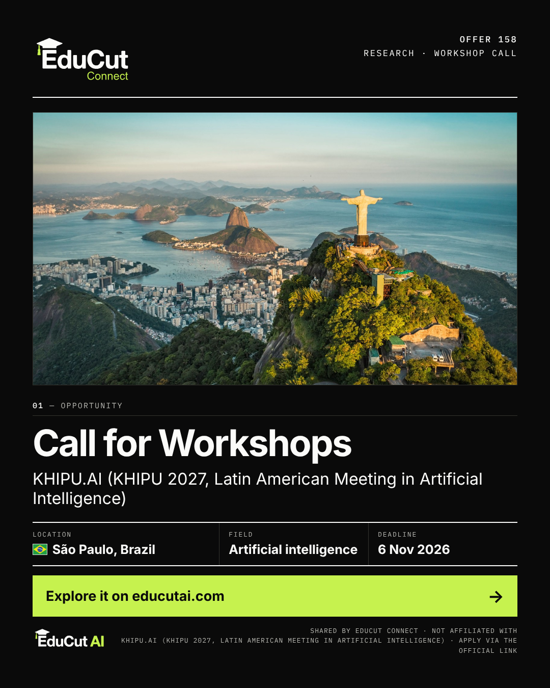

08:30
22 Oct 2026

Image file: 01_22Oct_08h30_Offer_158.png
🎓🇧🇷 Call for Workshops at KHIPU 2027 in São Paulo, Brazil! KHIPU 2027, the Latin American Meeting in Artificial Intelligence, is inviting workshop proposals for its meeting at the University of São Paulo from 5 to 9 April 2027. 📍 Location: São Paulo, Brazil 🎓 Level: Researchers 🔬 Fields: Artificial intelligence 📅 Deadline: 6 November 2026 🔗 Explore the opportunity and apply: https://educutai.com/educut-connect/158-call-for-workshops/ Know an AI researcher who wants to run a workshop in Latin America? Share this opportunity! #CallForProposals #KHIPU #ArtificialIntelligence #LatinAmerica #Brazil #EduCutConnect #EduCutAI
Image alt text
Opportunity card for the Call for Workshops of KHIPU.AI (KHIPU 2027, Latin American Meeting in Artificial Intelligence), São Paulo, Brazil, with proposals due 6 Nov 2026. The background photo of Brazil is an aerial view of Rio de Janeiro: Christ the Redeemer on Corcovado above Sugarloaf Mountain and Guanabara Bay.